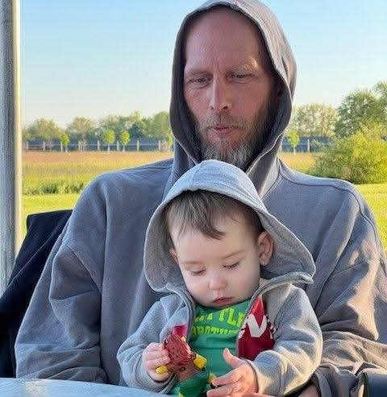
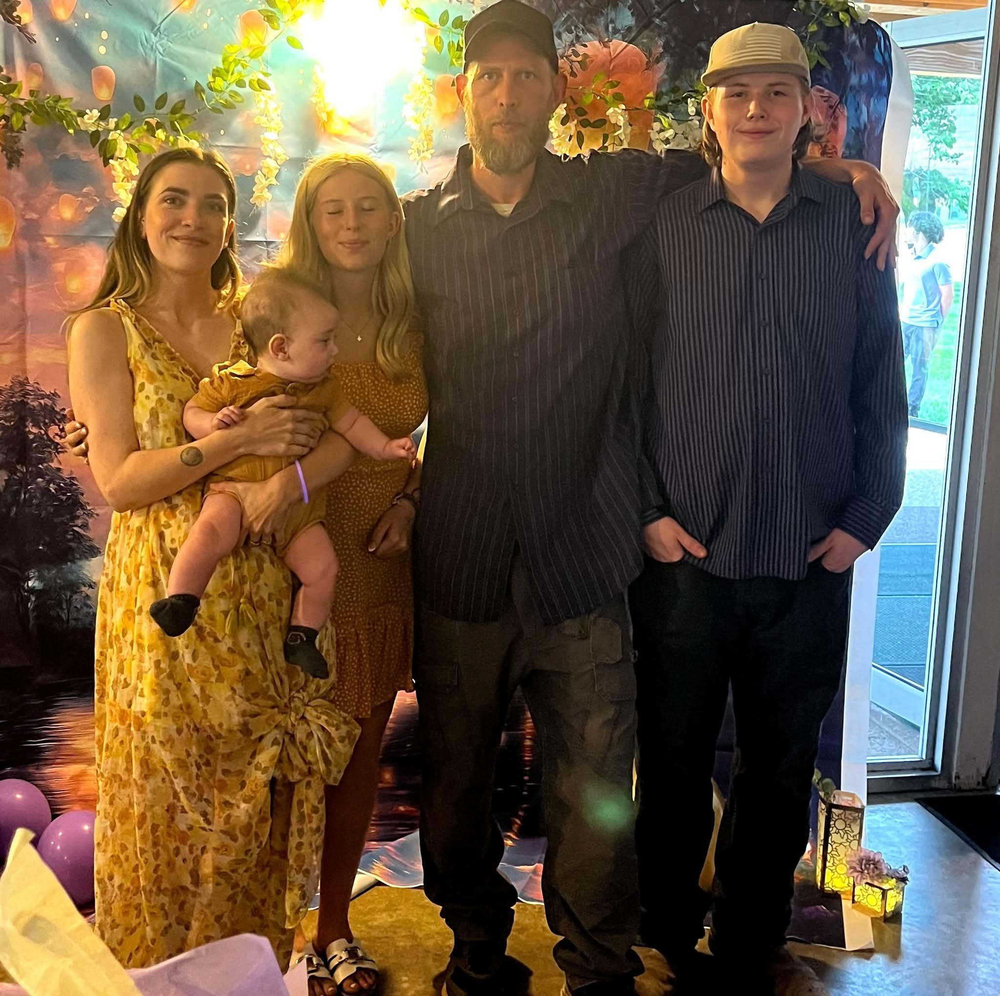
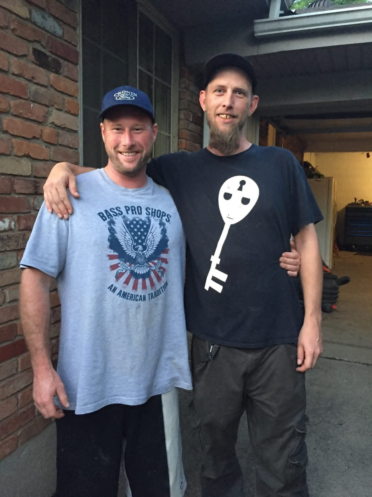
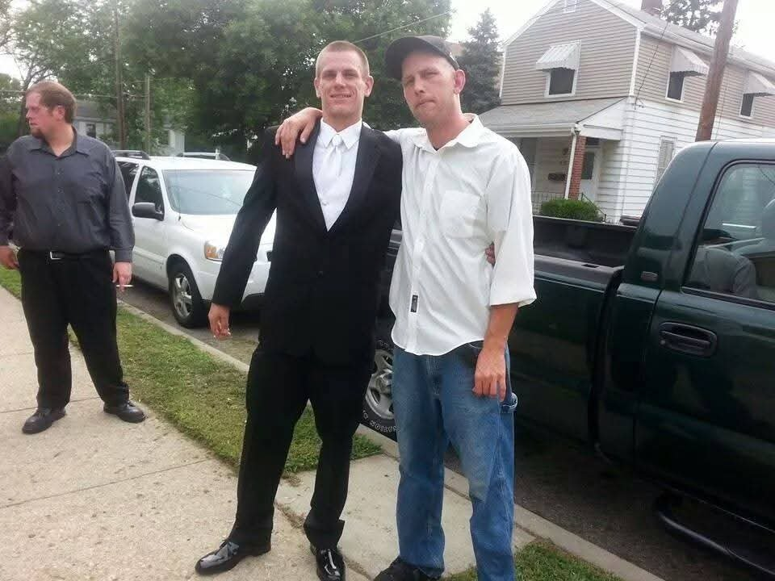
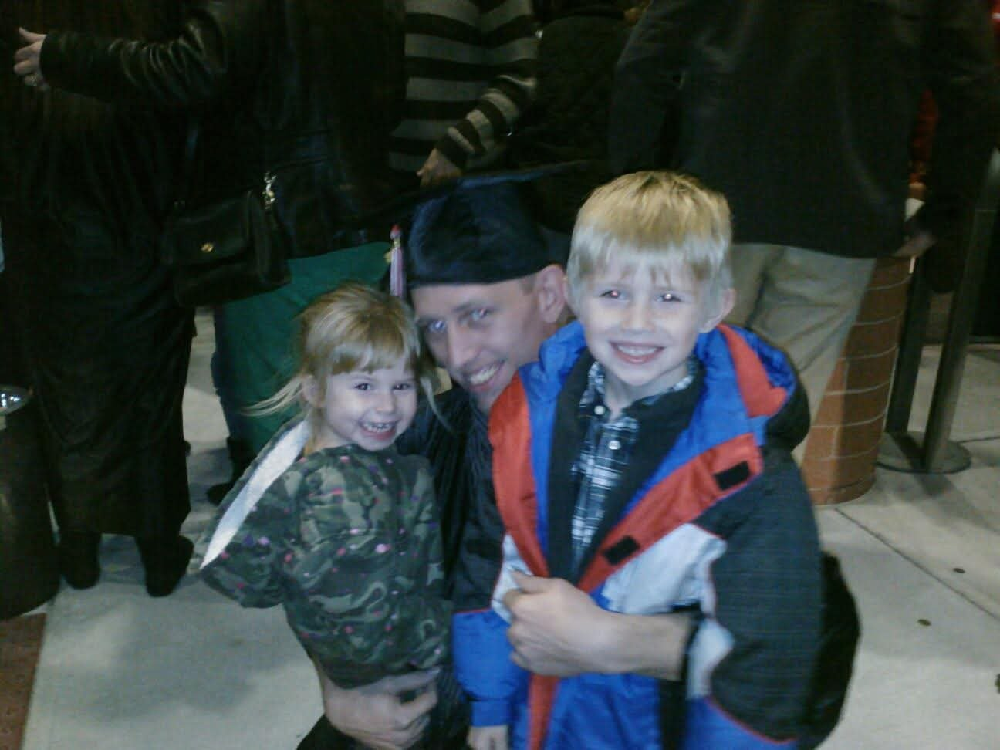
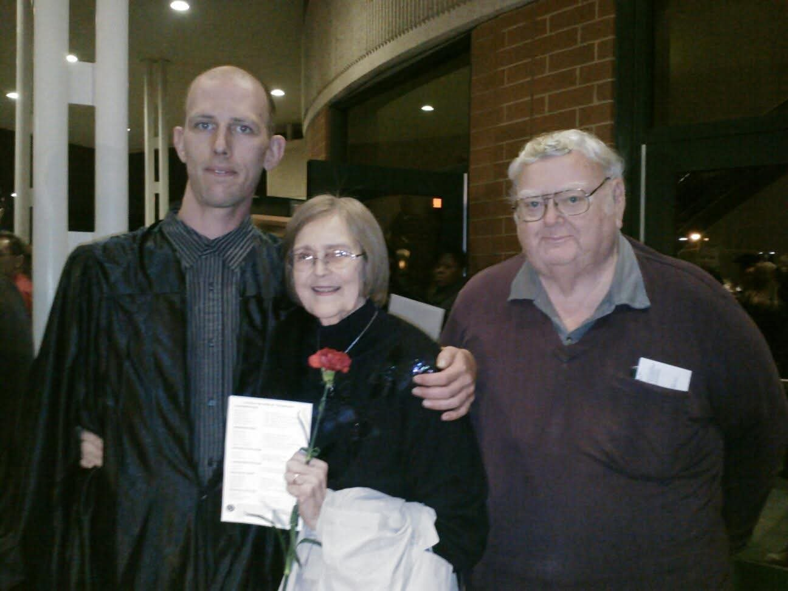
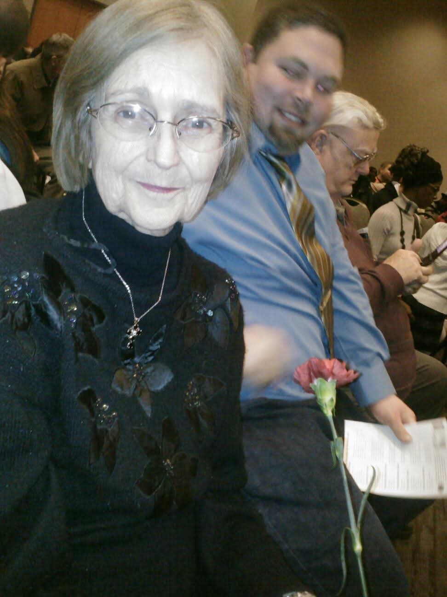
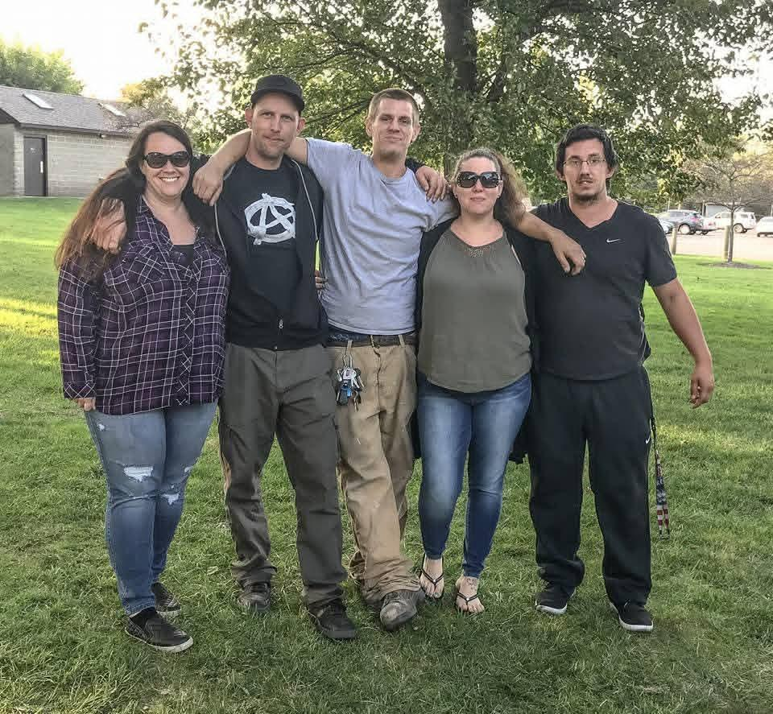

18 November 1981, Manhattan, Kansas –
1981 · age 0
Born, Manhattan, Kansas FAMILY ACCOUNT
1983 · age 2
Parents divorced when he was about two, FAMILY ACCOUNT
1996 · age 15
Started work at fifteen, at the Burger King in Kenwood Mall, Cincinnati area FAMILY ACCOUNT
Unknown · age -
Served in the Army Reserves as military police (31B), FAMILY ACCOUNT
Unknown · age -
Refinished high-end antique furniture in Blue Ash, Ohio; later window installation, residential remodeling, and fence building, Blue Ash, Ohio FAMILY ACCOUNT
Unknown · age -
Founded The Awakened Cincinnatians; ran #OpHelpingHands at Piatt Park for about three years, Cincinnati FAMILY ACCOUNT
Unknown · age -
Cared for Ruth at home as her health failed, then became Tom's full-time caregiver until Tom's death, FAMILY ACCOUNT
2022 · age 40
Bought land 10–15 minutes north of Seaman, Ohio, with Mary, Adams County, Ohio FAMILY ACCOUNT
Richard Anthony Brewster, called Rick, was born 18 November 1981 in Manhattan, Kansas, where his father was stationed with the Army at Fort Riley {FAM}. He is the son of Garry Anthony Brewster and Susan Ruth Shamblen {FAM}. His parents divorced when he was about two years old.
He grew up in the Cincinnati area — Loveland and Deer Park, Ohio — in his mother and stepfather Shawn Kevin Moore's household, and spent stretches with Shawn's parents, Patrick and Victoria Moore, in Milan, Indiana {FAM}. The steady ground of his childhood was the home of his maternal grandmother, Ruth Laverne McKinney, and her husband James Thomas “Tom” McGregor, who stepped in to protect and help raise the children {FAM}.
He started work at fifteen, flipping burgers at the Burger King in Kenwood Mall, and went on through restaurant, grocery, auto-shop, and factory work {FAM}. He served in the Army Reserves as military police (31B) {FAM}. Work he loved followed: refinishing high-end antique furniture in Blue Ash, Ohio — pieces that went into offices in Washington, D.C., and a set made for a room in the White House — and later window installation, residential remodeling, and fence building {FAM}.
In Cincinnati he founded The Awakened Cincinnatians {FAM}. For about three years the group ran #OpHelpingHands at Piatt Park, feeding and clothing homeless people every week, and he made the hand-drawn “Awakened Masks” that became his signature in the activist community {FAM}.
His partner is Mary Ort {FAM}. They were best friends first — Mary was close friends with his younger brother Christopher — and became a couple while both were staying at his mother's house {FAM}. They got engaged at Ruth and Tom's house {FAM}. When he won full custody of Miles and Kailen, the family moved into that same house {FAM}. He cared for Ruth at home as her health failed, and after her death in 2018 he left his job to become Tom's full-time caregiver until Tom's death {FAM}. In the spring of 2022 they bought land 10–15 minutes north of Seaman, Ohio, where they now live {FAM}.
His children are Miles Anthony Brewster and Kailen Rayne Brewster, whose mother is Amber Dague, and Samuel James Brewster, whose mother is Mary Ort {FAM}. Samuel was named for James Thomas “Tom” McGregor and the ancestral Jameses of the line {FAM}. His earlier partnership with Amber Dague ended not long after Kailen was born; they are now close friends and co-parents, and Amber's parents, Trish and Rob Felock, helped raise the children {FAM}.







Grades: DOCUMENTED an original record says it · SUPPORTED several records point to it · FAMILY ACCOUNT the family's own telling · UNPROVED a lead, not proved.
FamilyTreeDNA Y-DNA tested; Brewster surname project FAMILY ACCOUNT. His descent runs through James Thomas Brewster × Mary Catherine Patton; the deeper Brewster parentage (Ebenezer II → Jeremiah → James Gray) is carried as UNPROVED in the research until records decide it. No individual DNA match results are shown on this page.